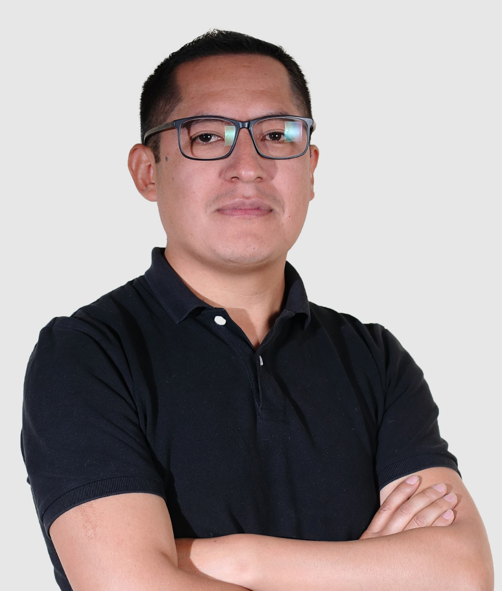
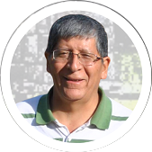
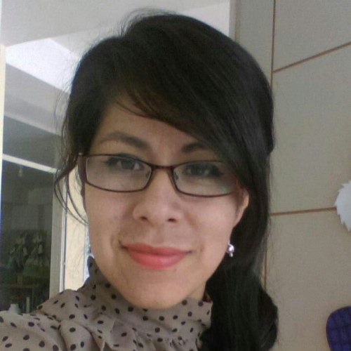
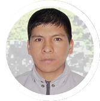
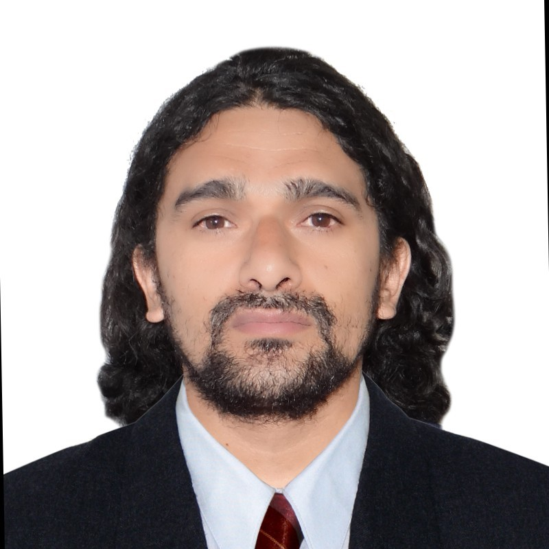
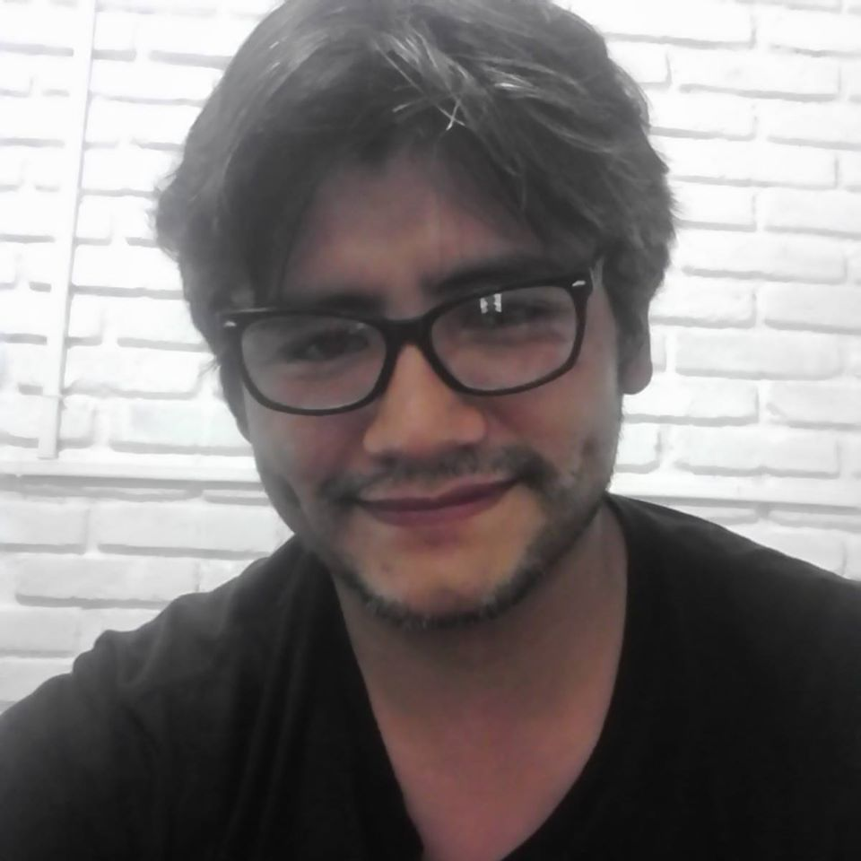
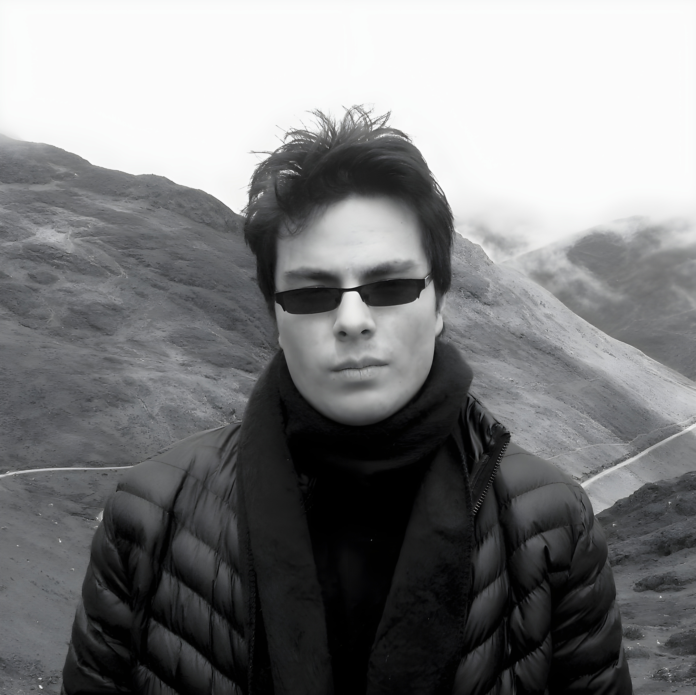

Profesores

Dr. Harley Vera Olivera
Bases de Datos & Modelos de Datos

Dr. Lauro Enciso Rodas
Algoritmos & Optimización
Dr. Hans Harley Ccacyahuillca Bejar
Visión Computacional

Mag. Gabriela Zúniga Rojas
Procesamiento de Lenguaje Natural (NLP)
Mag. Gerar Francis Quispe Torres
Procesamiento de Datos & Anomalías

Dr. Edwin Alvarez-Mamani
Machine Learning & Computación Paralela

Dr. Fernando Montoya Cubas
Redes Complejas & Genética

Mag. Ray Dueñas Jiménez
Algoritmos Genéticos & Redes Complejas
Exestudiantes

Mag. Jared León Malpartida
Ph.D. Student at University of Warwick, England
Mag. Edwin Alvarez Mamani
Ph.D. Student at PUCP, Perú
Bach. Milagros Yarahuaman Rojas
MSc Student at Universidade de São Paulo (USP), Brasil
Bach. Erick Andrew Bustamante Flores
MSc Student at Universidade de Brasília (UnB), Brasil
Bach. Anthony Mayron Lopez Oquendo
MSc Student at Universidad de Puerto Rico, Recinto Universitario de Mayagüez, Puerto Rico
Bach. Hanan Ronaldo Quispe Condori
MSc Student at Institut Polytechnique de Paris, Francia
Estudiantes Actuales:
Ibeth Janela del Pilar Cusi
Johan Mihail Conde Sallo
Yasumy Maricely Jallo Paccaya
Thalia Quispe Mamani
Jadyra Ch'aska Choque Quispe
Anghelo Alagon-Fernandez
Yerson Joab Chirinos-Vilca
Lizeth C. Mamani
Milton Amed Achahui Cruz
Johana Maria Mamani Meza
Fran Anthony Hancco Champi
Lucero Esmeralda Cruz Yucra
Rayneld Fidel Castro Pari
Glina de la Flor Puma Huamani
Lucero Estefany Ramos Condori
Jesus Gustavo Ochoa Barrios
Jhon Andherson Quispe Llavilla
Daniel Alegria Sallo